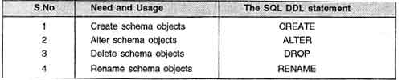
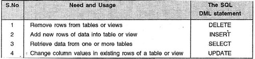
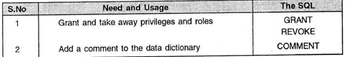

It is a language that allows the users to define data and their relationship to other types of data. It is mainly used to create files, databases, data dictionary and tables within databases. It is also used to specify the structure of each table, set of associated values with each attribute, integrity constraints, security and authorization information for each table and physical storage structure of each table on disk.
The following table gives an overview about usage of DDL statements in SQL:
Click to read more
The World Of Database Languages . .
Data Definition Language (DDL)

Data Manipulation Language (DML)
It is a language that provides a set of operations to support the basic data manipulation operations on the data held in the databases. It allows users to insert, update, delete and retrieve data from the database. The part of DML that involves data retrieval is called a query language.
The following table gives an overview about the usage of DML statements in SQL:
Click to read more

Data Control Language (DCL)
DCL statements control access to data and the database using statements such as GRANT and REVOKE. A privilege can either be granted to a User with the help of GRANT statement. The privileges assigned can be SELECT, ALTER, DELETE, EXECUTE, INSERT, INDEX etc. In addition to granting of privileges, you can also revoke (taken back) it by using REVOKE command.
The following table gives an overview about the usage of DCL statements in SQL:
Click to read more

Copyright © 2014 Pillars Of IT. All rights reserved.